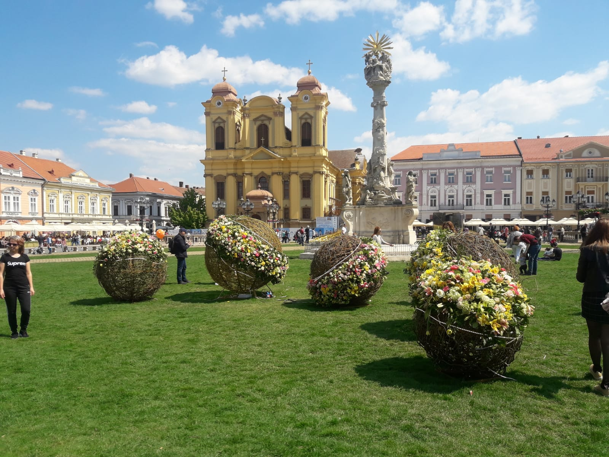
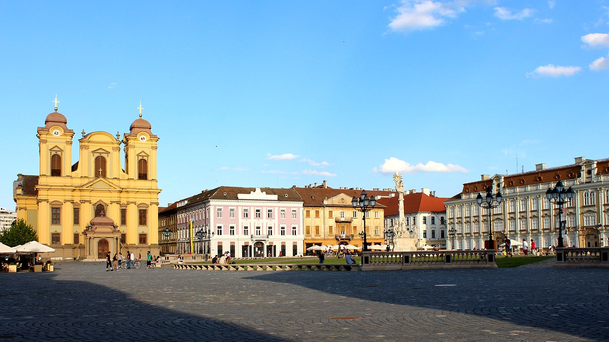
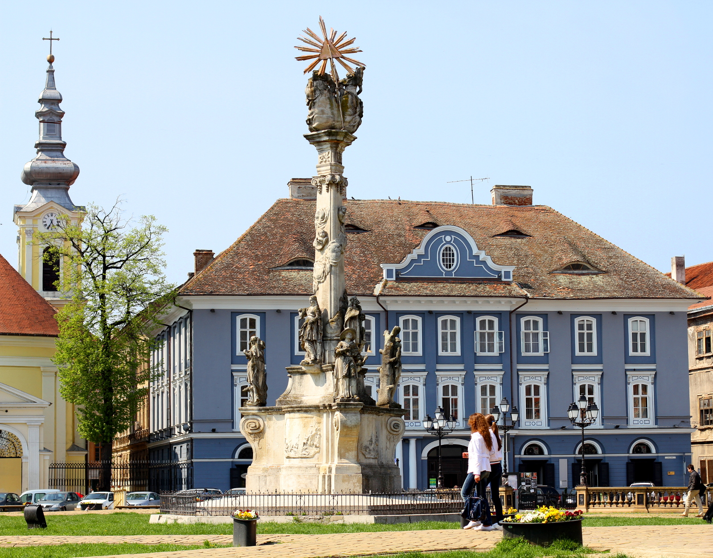
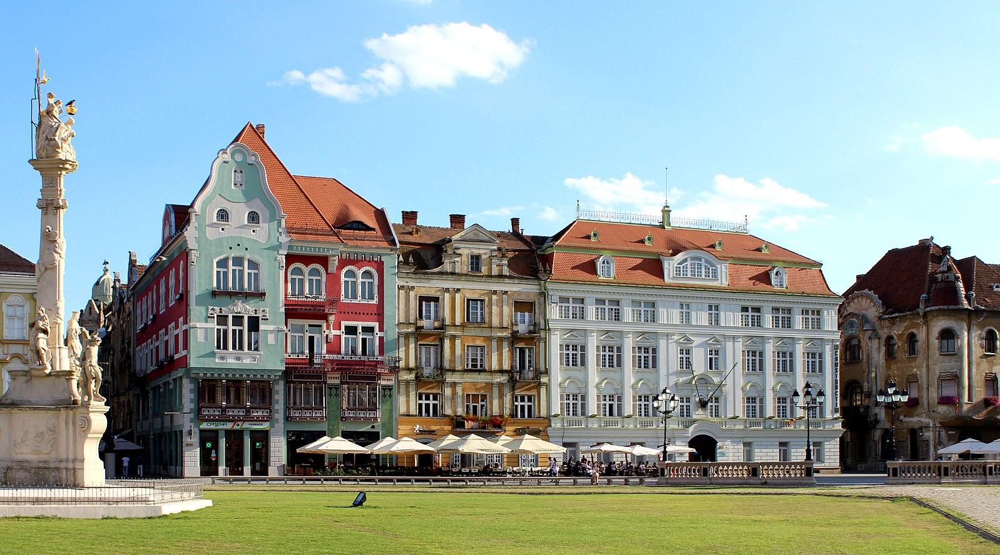

Union Square (Romanian: Piața Unirii), also known as Dome Square (Romanian: Piața Domului), is the oldest square in Timișoara. It was named in honor of the Romanian troops that entered Timișoara on 3 August 1919 and established the Romanian administration, thus finalizing the union of Banat with Romania. Initially, it was called Losonczy Square, after Count István Losonczy who was killed by the Turks in 1552, when the fortress was conquered.
Union Square is the most important reserve of Baroque architecture in the city. It houses some of the most valuable monuments of Timișoara: the two cathedrals, one Roman Catholic and one Serbian Orthodox, the Baroque Palace, the Plague Column, etc.
Until 1716, the current square was crossed diagonally, from the southeastern to the northwestern corner, by the entrenchment of the Turkish fortress. The idea of creating a rectangular square in the northern part of the fortress was first circulated in 1733. It was not until 1740 when the entrenchment began to be demolished. Later, the moat was filled with earth and the square was paved with natural stone. The last remains of the fortifications existed in the square until 1745–1746. Prior to these years, it was decided to expand the square to the west, becoming the largest of the fortress squares: 150 × 100 m.
The relocation of the seat of the Catholic Diocese of Cenad, from Szeged to Timișoara, made it necessary to build a cathedral for the diocese. The construction of the dome began in 1736 and lasted 38 years. The Serbian cathedral was built in Baroque style between 1745–1748 during the Serbian Orthodox bishop of Timișoara Georgije Popović. The building of the old Prefecture (the current Baroque Palace) was built in 1754, being initially the seat of the civil governors of Banat. Until 1788, nothing was built on the quarter south of the Catholic Dome. Only later this front of the square was completely built and Union Square became a closed urban space.
   